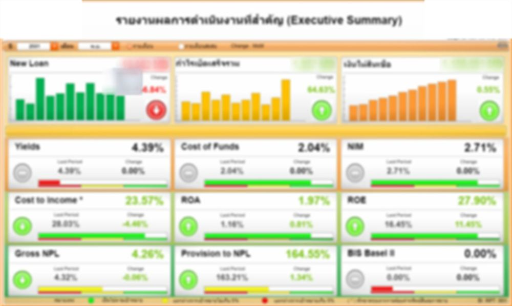
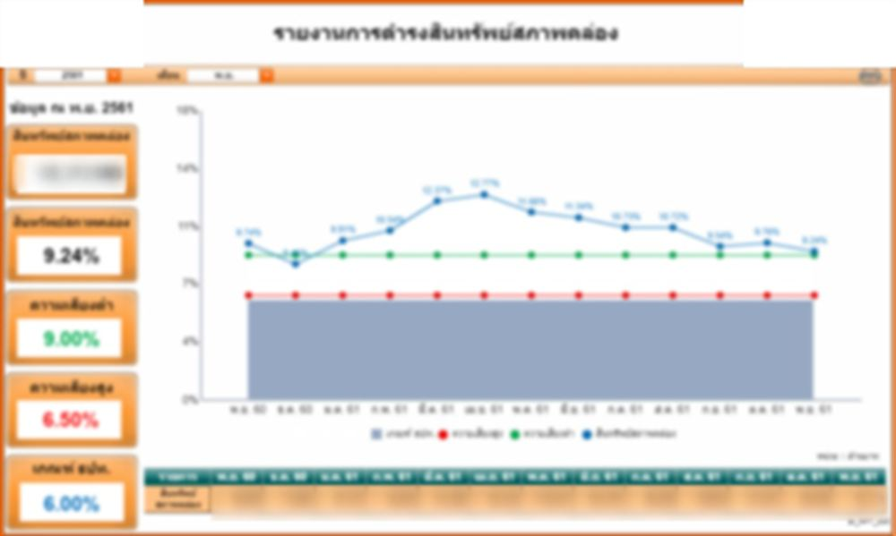
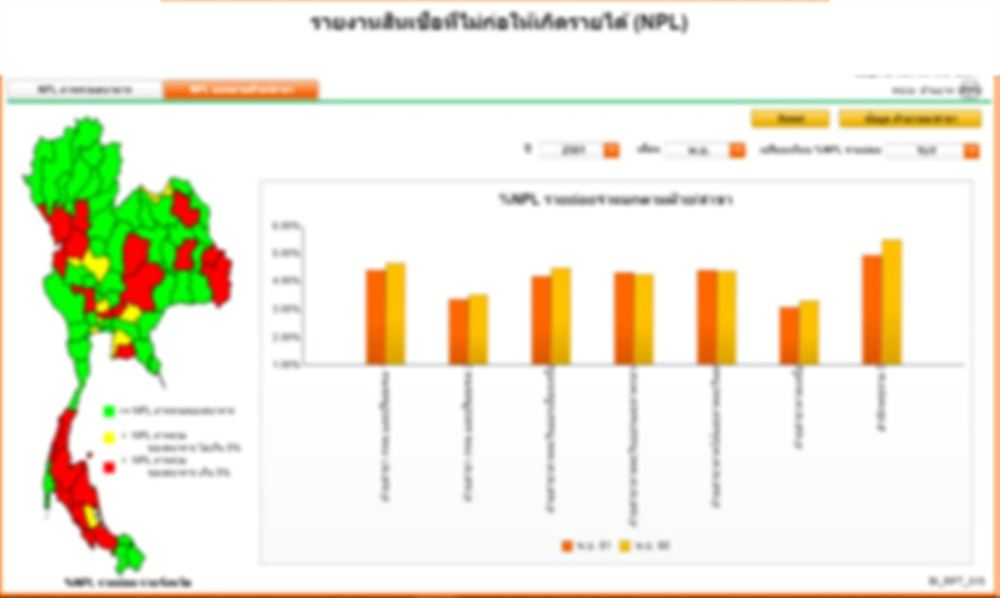

Reporting de gestion bancaire
35 pages de reporting pour une banque publique thaïlandaise de crédit immobilier, pensées pour une lecture financière. Données 2018.
Réalisé comme développeur BI chez 4Plus Consulting (2018–2020). La suite répond à une question de la direction et des équipes finance : où en est la banque par rapport à ses objectifs, et où.

Les obligations émises coûtent près de deux fois plus que les dépôts, mais ne financent que 12 % du total. Le coût global affiché (2,04 %) correspond au coût d'intérêt moyen de 1,80 % plus la contribution au fonds SFI.
3,24 points au-dessus du plancher de la banque centrale, mais seulement 0,24 point au-dessus du seuil interne de risque faible.


- Une couverture au-dessus de 100 % signifie que les provisions dépassent le stock de créances douteuses.
- 0,04 % de NPL sur les prêts récents : les dernières générations de crédit se comportent bien.
31,7 % des nouveaux prêts contre 29,5 % de l'encours : la banque croît plus vite que le marché. Sa part des nouveaux prêts a gagné 8 points depuis 2013 (23,7 %).
- Un arbre de création de valeur : chaque case affiche objectif, prévision et écart. Des curseurs (nouveaux prêts, remboursements, rendements, coût des ressources, charges, provisions) recalculent tout l'arbre.
- Scénario de taux MRR : des curseurs mensuels de −10 % à +10 % appliquent une variation de taux au seul encours à taux variable et donnent l'effet cumulé sur les produits d'intérêt.
- Rachats de crédit entrants et sortants, mois par mois contre les années précédentes, par division, avec les motifs de départ : une mesure directe de la pression concurrentielle.
Client anonymisé : nom, logos et montants retirés. Les captures sont floutées et montrent la mise en page. Ratios au 30 novembre 2018 (part de marché au 30 septembre 2018).